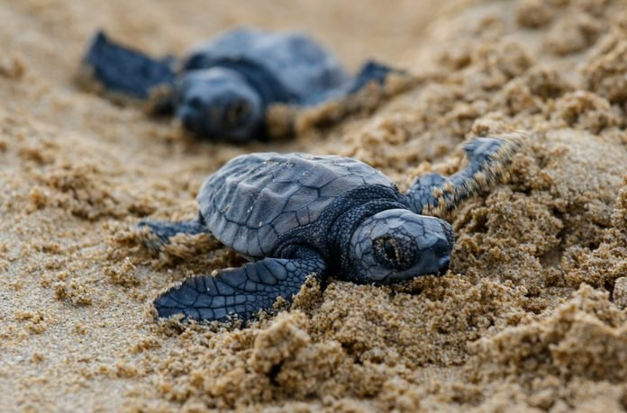

Another well-liked vacation spot is Bentota, which is on Sri Lanka's
southwest coast and is well-known for its lovely beaches and turtle
conservation initiatives. In Bentota, there are turtle hatcheries that
support the preservation and protection of sea turtles. Similar to other
turtle hatcheries in Sri Lanka, the main goal of the Bentota Turtle
Hatchery is to conserve and protect the sea turtle populations. The
hatchery provides a secure environment for the safe hatching of sea
turtle eggs by collecting them from endangered nesting locations. This
procedure aids in shielding the eggs from hazards both natural and
caused by people. The hatchery offers information on the several sea
turtle species that may be found nearby, such as the Green turtle,
Hawksbill turtle, Loggerhead turtle, and Olive ridley turtle.

Turtle Protection in Bentota
The preservation of sea turtles in Bentota, Sri Lanka, depends on turtle
protection. The following are significant actions and procedures carried
out in Bentota to safeguard turtles: 1. Turtle nest protection:
Bentota makes serious efforts to safeguard turtle nests on its beaches.
Local conservation groups and volunteers keep a tight eye on turtle
nesting areas, identifying and labeling nests for safety. To shield the
nests from human intervention and predation, protective barriers like
cages or fences are put in place. 2. Night Patrols:
To keep an eye on and safeguard nesting turtles, night patrols are
carried out by trained persons. These patrols aid in preventing
disruptions, predators, and poaching close to the nesting areas. They
aid turtles that are in the process of laying eggs and, if necessary,
assist in relocating nests that are at risk to safer sites.